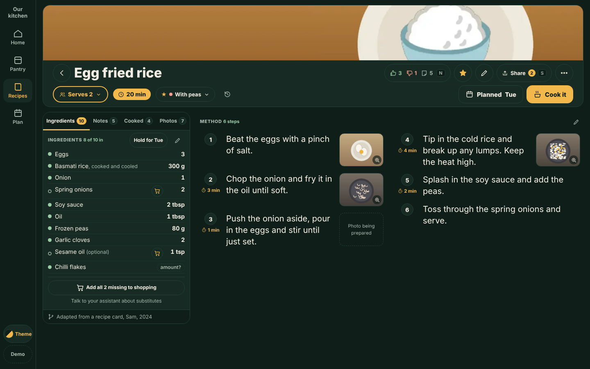
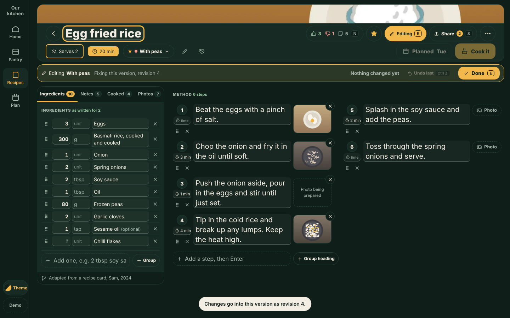
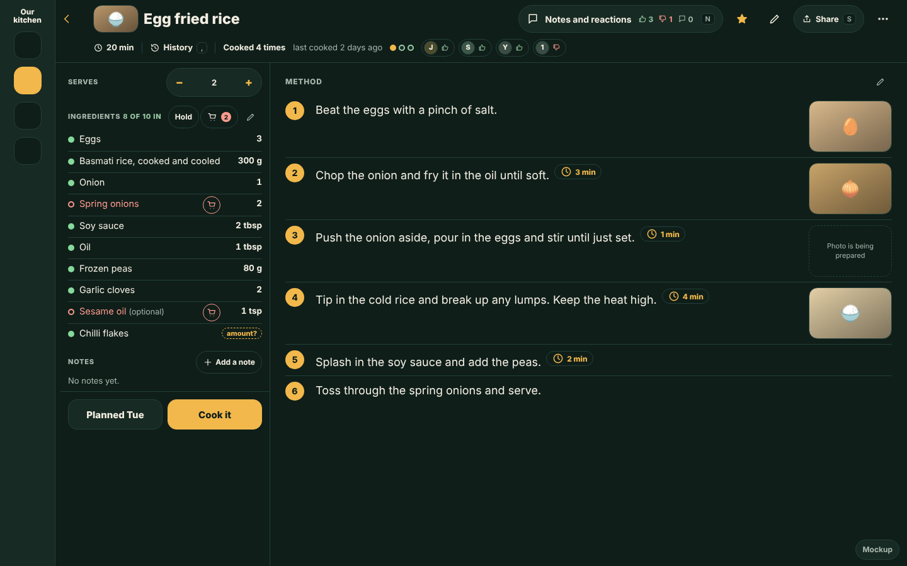
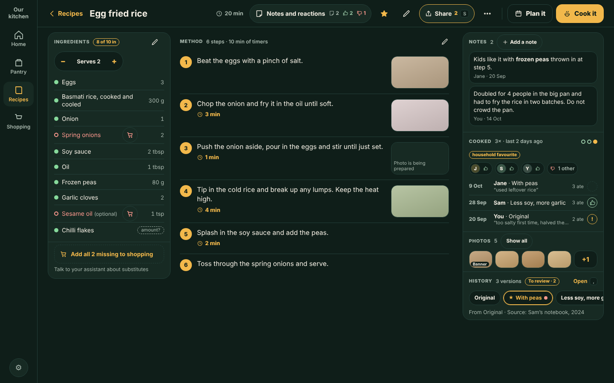
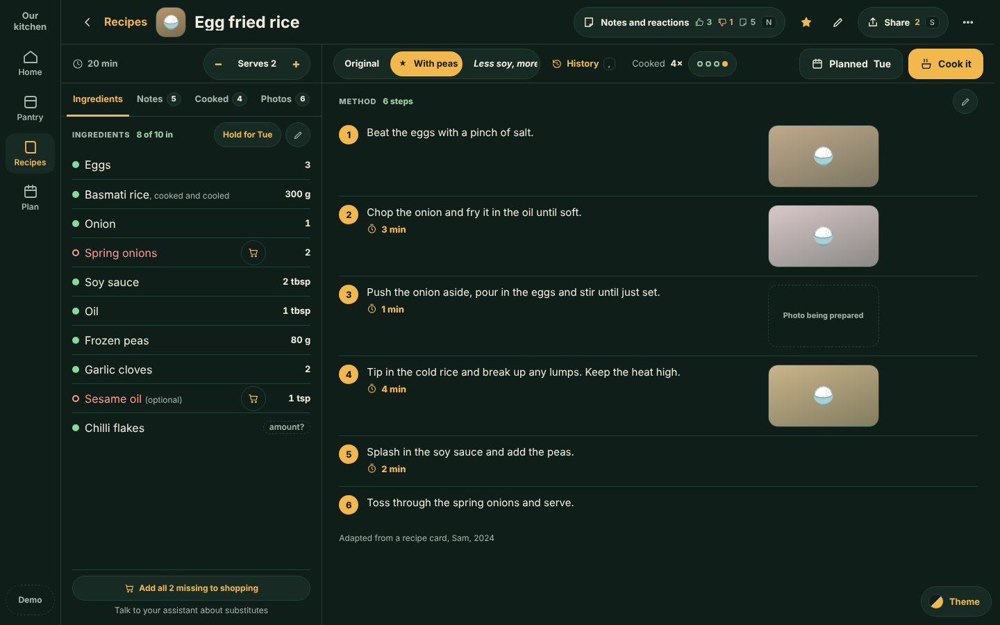
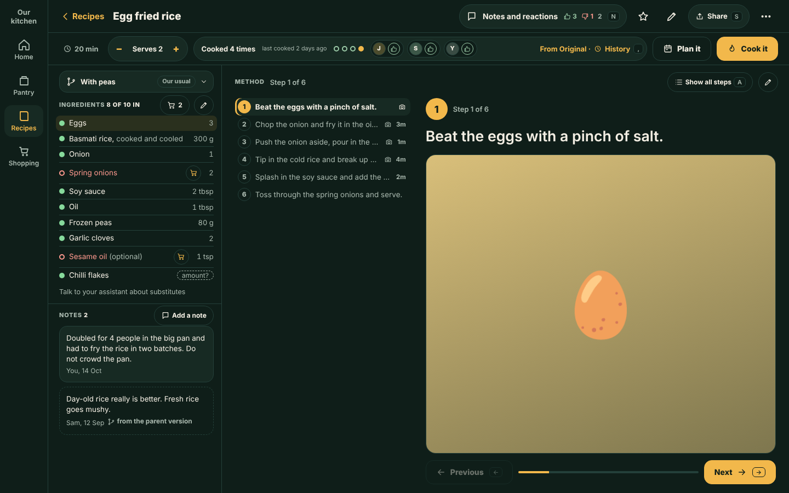
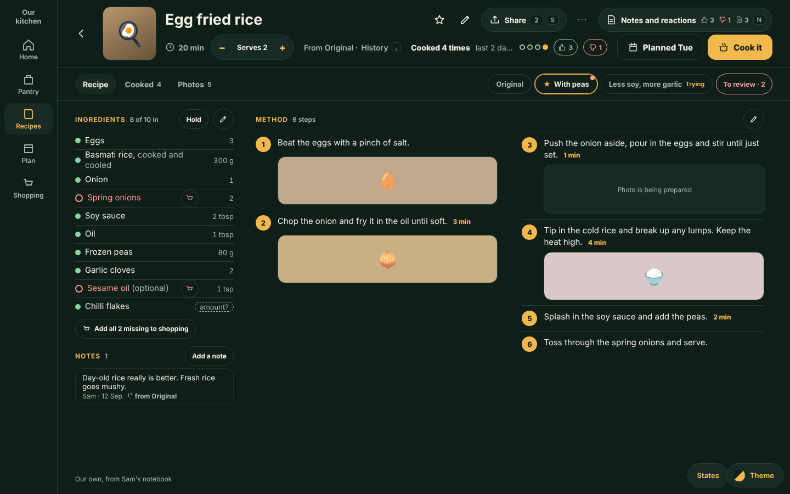

‹ All mockups
Recipe page, desktop layout options
Fragment. The job: read and cook from the full recipe page on a big desktop screen without scrolling where possible, with ingredients that wrap instead of wasting white space, notes close by, and history, serves, Plan it and Cook it given a place. Five options, plus a sixth, Recommended, that merges C and E as the owner asked (option D is dropped). Each is a live page with short, typical, long, notes and cooked states. Mockup only: nothing is built or saved. Kitchie issue #830. Draft, awaiting owner choice
The owner's words issue #830
- Ingredients you can text wrap; a lot of white space is wasted.
- Notes are also important.
- Do not scroll if it can be avoided.
- Pay attention to the history, the serves and the other bits.
Recommended, the owner's hybrid

C's in-place tabbed left rail (Ingredients, Notes, Cooked, Photos) under E's hero strip, with the method in balanced columns on the right.
- Hero
- A real banner photo, with the title, the time badge directly under it, Serves, version and "From parent", History, proof and every action including Plan it and Cook it. No bottom bar.
- Fits without scrolling
- Short, typical and long at 1280x720, 1440x900 and 1920x1080: the page never scrolls. A long recipe scrolls only the ingredient list inside the rail.
- Notes
- A rail tab (key 2) with a count; the pill (icons only, key N) opens a flyout that names who rated what.
- Method
- Two balanced columns; the step time sits beside the step number; no ingredient links (Cook it owns those).
- Below 80rem or 700px high
- The page stacks and scrolls (the build keeps today's page there).
- Needs the owner
- The width-rule exception (AGENTS.md:181) and the breakpoint. See Owner decisions in the notes.
Open decision: Plan it and Cook it on the banner

Always visible on the hero photo instead of row two: A bottom-right solid pair, B floating glass bar, C top-right stack. Placement not chosen.
Editing it, inline (Kitchie #892)

The owner's direction (17 October): a proper desktop edit experience, edited inline in place, not a big form. The same page with every value click-to-edit.
- Entering
- Edit chip or E turns edit mode on; every value is then one click (or Enter) from a field in place. Section pencils open that section.
- Saving
- Per field: Enter or leaving it saves, the strip says Saved, a toast and History carry Undo, Ctrl+Z undoes the last. Esc cancels the field.
- Covers
- Title, Serves, time and version name; ingredients (amount, unit, name, add, remove, reorder, groups); steps (text, time, photo, add, remove, reorder); notes.
- Versions
- A Trying version edits in place; a keeper asks once (fix this one, keep both, different dish). Keep both starts a new version that shows in the version menu and History.
- Also
- Validation messages in the field, Tab flow, empty states, short, typical, long and empty samples. No scrolling at 1280x720, 1440x900 or 1920x1080, with either flyout open.
- Needs the owner
- Revision per session or per change, whether it replaces the right-lane panel, where the keeper question sits. See the notes.
The five options
Thumbnails are the typical recipe at 1440x900, dark. Each option also has light, 1280x720 and 1920x1080 screenshots in its folder.

Ingredients and notes in a narrow left rail with wrapping text; the method gets the wide side.
- Fits without scrolling
- Yes for short and typical at 1280x720, 1440x900 and 1920x1080; the page never scrolls.
- Long recipe
- The ingredient rail and the method scroll, each inside the page.
- History
- Header row 2, one button that opens the Cooked tab in the right lane.
- Serves
- Top of the rail, above the quantities it scales.
- Notes
- Under the ingredients in the rail: newest two, then the lane for all.
- Plan it / Cook it
- Footer of the rail; moves with recipe length.
- Costs
- Cook it is far from the right edge; photos and Cooked are a tap deeper; method is about 450px at 1280 with the lane open.

Ingredients rail, method centre and a right rail for everything about us and this recipe.
- Fits without scrolling
- Yes for short and typical at all three sizes; page and header never scroll.
- Long recipe
- Ingredients and method scroll on their own (sticky group heads); three scroll regions in all.
- History
- Strip in the right rail with versions, review and source.
- Serves
- Top of the ingredients rail.
- Notes
- Top of the right rail, then Cooked and Photos.
- Plan it / Cook it
- Header, right-aligned; Cook it is primary.
- Costs
- Busiest header (11 controls); centre only about 550px at 1280; layout changes shape after the first cook.

A narrow rail with Ingredients, Notes, Cooked and Photos tabs; the method is always on the right.
- Fits without scrolling
- Yes for short and typical, and with every tab open, at all three sizes.
- Long recipe
- The rail pane and the method pane scroll; header, row B and tab strip stay.
- History
- Row B, right: version strip, History link and a Cooked-count button.
- Serves
- Row B, left, over the rail.
- Notes
- A tab in the rail (key 2 or N); reactions stay in the header pill.
- Plan it / Cook it
- Row B, right, above the method.
- Costs
- Replaces the owner-decided jump row; step photos small until clicked; a fixed-height screen, so zoom above 125% pushes into the panes.

A rail plus the whole method as a one-line list, with the current step large beside it.
- Fits without scrolling
- Yes for short and typical at 1440x900 and 1920x1080 (a few px inside the rail at 1280x720).
- Long recipe
- Only the rail scrolls (ingredients and notes); the step list fits, with a highlight for the rows a step uses.
- History
- Chrome row 2 (strip).
- Serves
- Chrome row 2, a stepper that feeds Cook it.
- Notes
- Under the ingredients in the rail, at most 40% of its height.
- Plan it / Cook it
- Chrome row 2, beside Serves.
- Costs
- You cannot read the whole method at once without Show all steps; the stage overlaps Cook it; long titles and notes squeeze the height at 720.
Dropped by the owner (17 October 2026). The cook-along idea may be parked under Kitchie #810 (Cook it on desktop); that is an open question in the notes.

One hero strip holds everything about the recipe and every action; ingredients with notes and the method sit below.
- Fits without scrolling
- Yes for short, typical and long at 1280x720, 1440x900 and 1920x1080 (0 px measured).
- Long recipe
- Fits; the only scroller is the Notes block when there are more notes than room (the lane shows all).
- History
- Hero strip, key comma.
- Serves
- Hero strip.
- Notes
- Under the ingredients, sized to the space left; the lane docks open from 1700px if it has content.
- Plan it / Cook it
- Hero strip, top right; no bottom bar.
- Costs
- A new layout path, not a CSS tweak; the hero can reach 145px with a long title; at 1280 the lane covers the method; step photos shrink on long recipes.